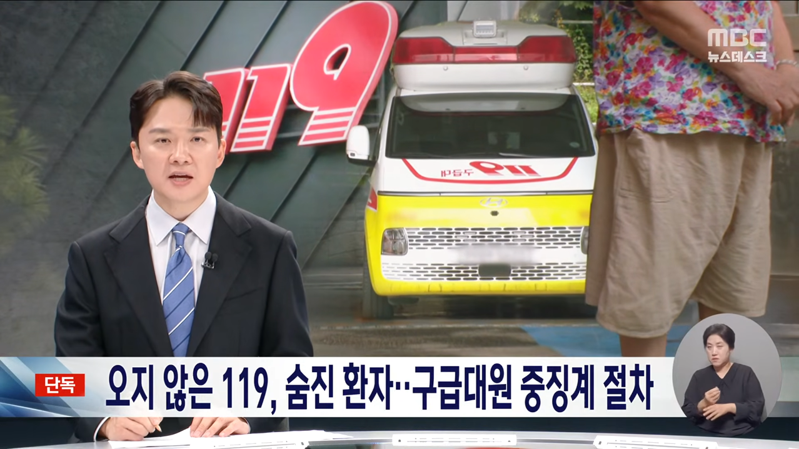
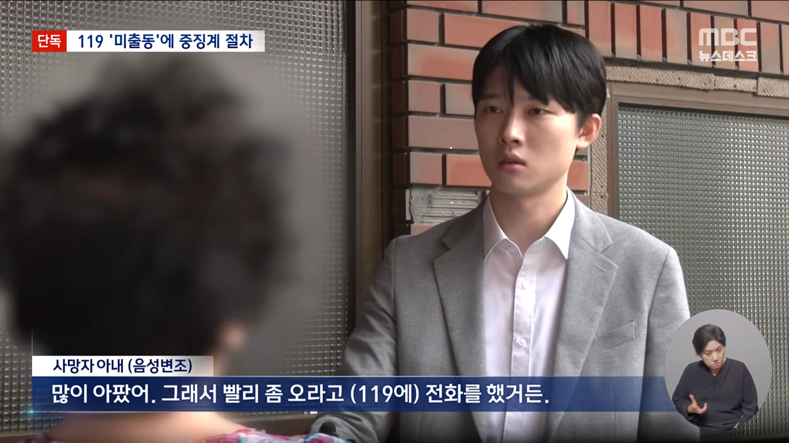
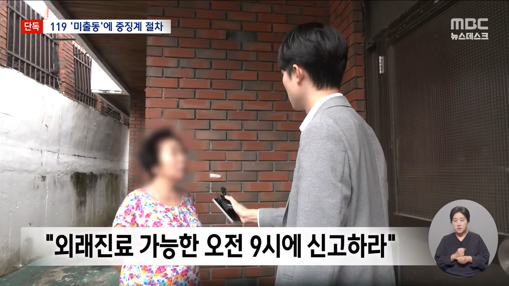
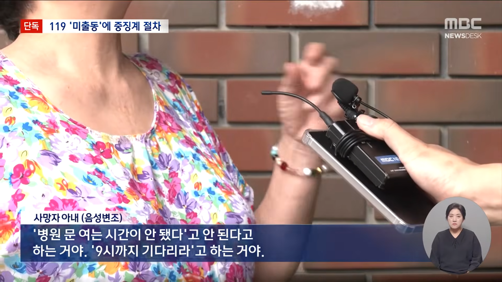
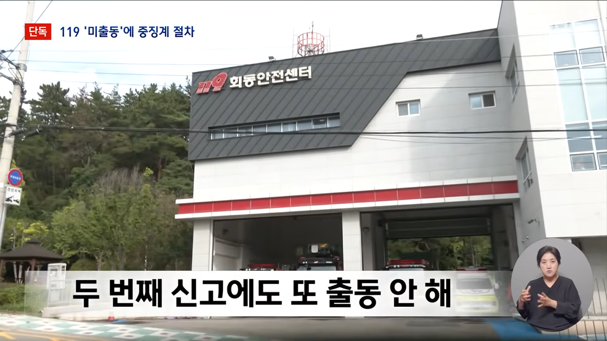
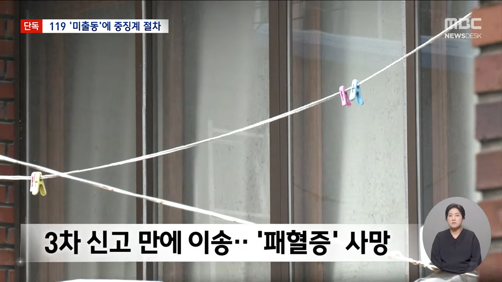
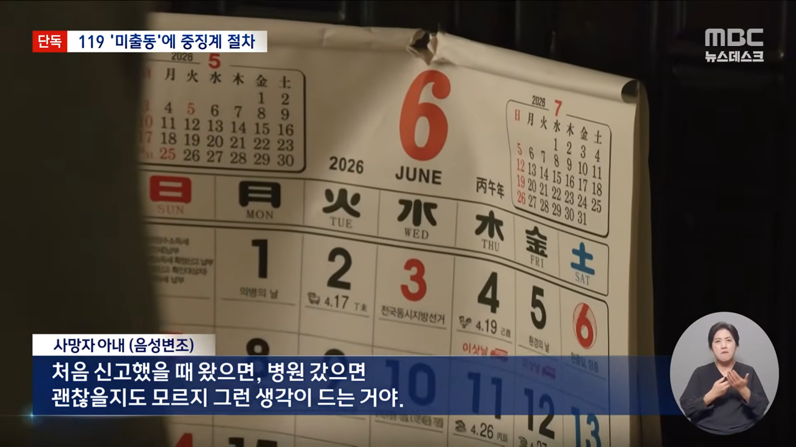
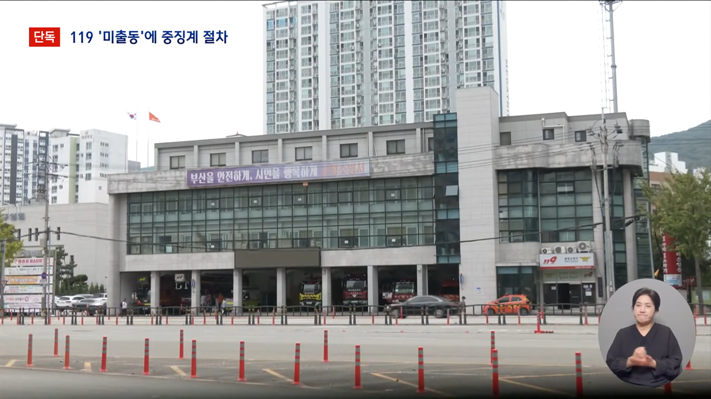
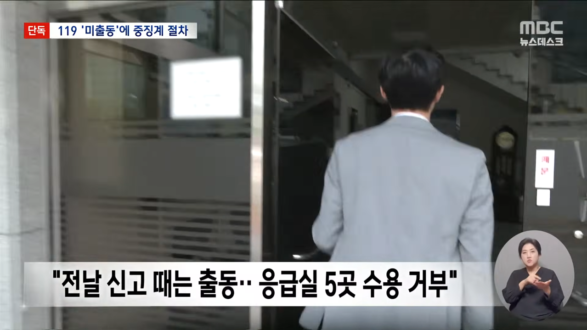
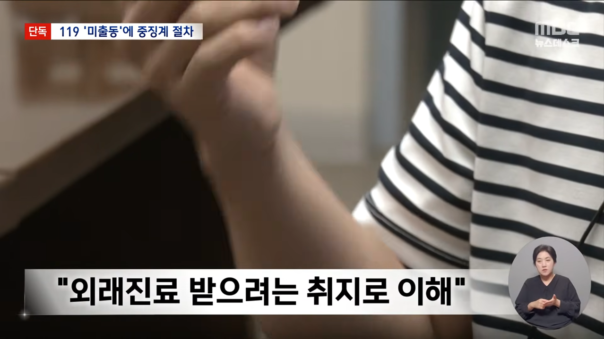
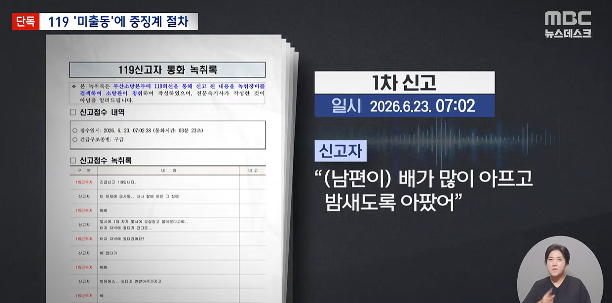
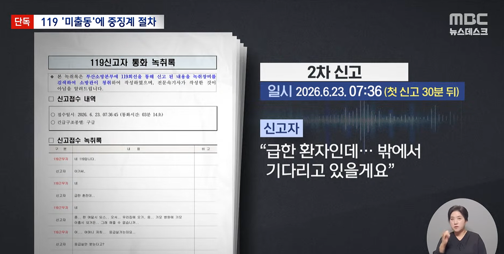
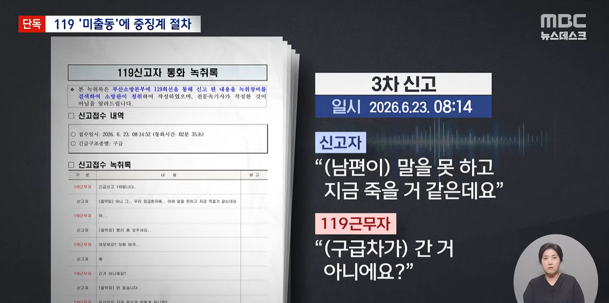













아니근데 상황실에서 지령을 내려줬는데 구급차가 자체적으로 종결할 수가 없거든?
나는 이 "출동을 안했다"라는게 아예 이해가 안감
그나마 이해되려면 상황실한테 자체진료보겠다고 구라치고 들어가는거?
근데 이건 진짜 말이 안되는거라서 아예 이 상황이 이해가 안됨
전날 기록만 보고 다음날 신고를
외래가는데 데려다 줘로 봐서
상황실에서 택시는 안되는데요 하고 자른거 아니면 말이 안됨
아니 그거조차도 적어도 보호자랑 연락 후 외래여부 확인하고 들어가지 막 들어가질 못해
그리고 들어갔으면 들어갔다고 상황실에 보고하고 시스템에도 귀소완료 보고 하게되어있는데
왜 이런 과정이 이뤄지지않았는질 모르겠음
기사에 달린 댓글로 타임라인 얼개 짜보면 전날 있던거 신고에서 부인이 연명치료도 거부하고 진료 가능한 대학병원 멀리있는거 가는것도 다 거부하고 이송거절 확인서까지 썼더라
그 상태에서 외래안내로 마지못해 끝낸듯?
그거 때문에 다음날 신고를 외래 가는데 태워달라는걸로 인지 한듯 싶음
외래가는데 택시처럼은 못해드림 2회 하고
3회차에 그게 아니라 응급으로 파악한거같은데
아다리가 좆같이 맞아서 이 상황 된듯
기사 댓글만 보면 중징계 확정 아니고 재조사 들어간다고 돼있음
그냥 119 호출에 100만원씩 때려버리면 됨.100만원 내고라도 갈꺼야? 그럼 뭐 한번부르든 두번부르든 매번 가줄껄. 죽을뻔한거 살아나는거면 백만원이 아깝겠어
실제로 네덜란드 같은 유럽 몇몇국가는 119 불렀는데 나중에 의사가 비응급이라고 판단 내리면 출동비 수백유로 내야함
수백유로까지도 필요없음. 출동지와 움직인 거리(목적지 아님)기준 택시비 2배만 받는다 해도 이상한건 싹 사라질듯.(추후 세금으로 청구)
기자가 기레기 한 기사임..
결국 응급실 뺑뺑이가 문제네
스마트폰 측면 전원버튼 누르면 전원끄기 다시시작 긴급전화 의료정보 이런거 있는데 실수로 잘못 누르면 바로 접수돼서 출동할까봐 매번 불편하더라. 실제로 잘못눌러서 전화 연결되는 중에 바로 껐는데 119에서 전화 걸려와서 전화하셨냐고 하는데 잘못눌렀다고 죄송하다고 했음.. ㅈㄴ무섭
중립기어 병신들아
출동후 비응급시 돈내야함 조항 있어야됨 시발거
2회동안 출동안했다가 3회때야 출동했고
사망과 인과관계를 따져봐야겠지만
정직이상의 중징계는 못피할 가능성이 높음
소방이라 여론이 꽤 호의적인거같은데
이거 경찰이였음 개쌍욕먹었을 사안임